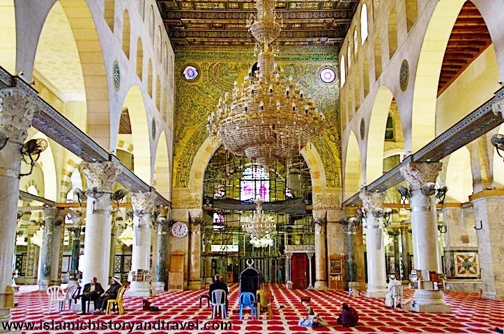

15:30
What's Inside Al-Aqsa?
Take a virtual tour of the magnificent Al-Aqsa Mosque, exploring its architecture, history, and spiritual significance.
Watch our educational videos to learn more about Jerusalem's holy sites and prepare for your visit.
Take a virtual tour of the magnificent Al-Aqsa Mosque, exploring its architecture, history, and spiritual significance.
Learn about the proper etiquette and customs when visiting Jerusalem's holy sites, ensuring a respectful experience.
Understanding security measures and safety guidelines for visitors to Jerusalem's holy sites.
Discover the best local restaurants and food options near Jerusalem's holy sites, including halal and kosher choices.
Explore the significance of Friday prayers in Jerusalem and what makes this day unique in the holy city.